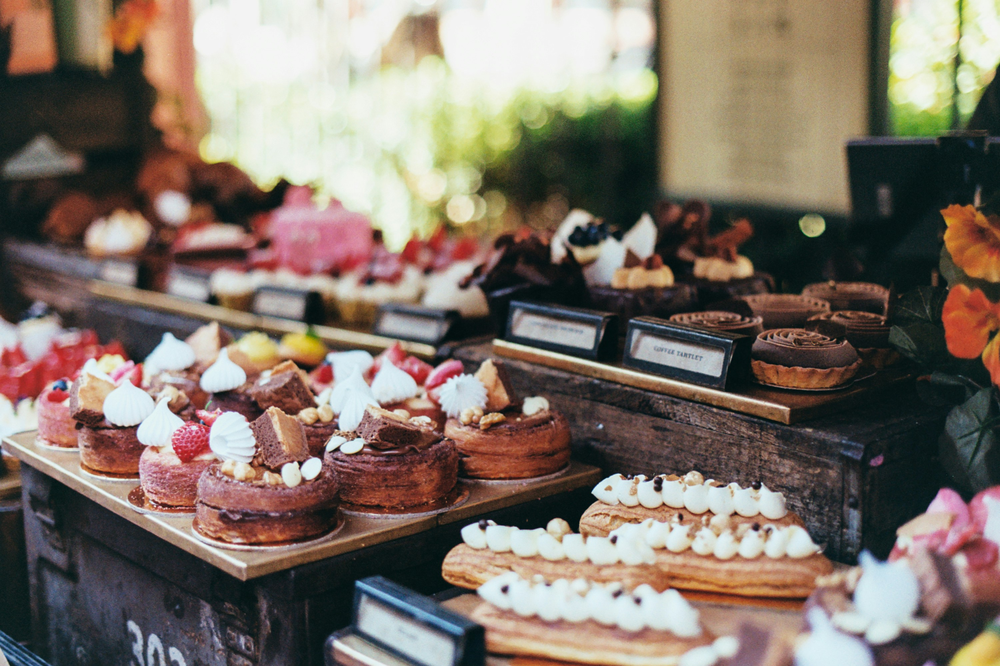

Dulce Encanto nació en el 2022 como un sueño compartido entre familiares que encontraron en la repostería una forma de unir corazones y crear momentos especiales. Todo comenzó en una cocina limeña, horneando tortas y galletas caseras para nuestros seres queridos, quienes pronto se convirtieron en nuestros primeros clientes y los principales impulsores de esta aventura.
Con el paso del tiempo, el cariño del público nos llevó más lejos de lo que imaginamos: participamos en ferias locales, comenzamos a recibir pedidos a través de redes sociales y, poco a poco, fuimos expandiendo nuestro menú con nuevas delicias, siempre hechas con ingredientes de calidad y una gran dosis de amor.
Hoy, Dulce Encanto se dedica a endulzar celebraciones, eventos y fechas especiales, manteniendo viva la esencia que nos vio nacer: repostería artesanal, con ese toque casero que se siente en cada bocado. Creemos que un buen postre puede alegrar el día, y por eso, ponemos el corazón en cada creación que sale de nuestro horno.
